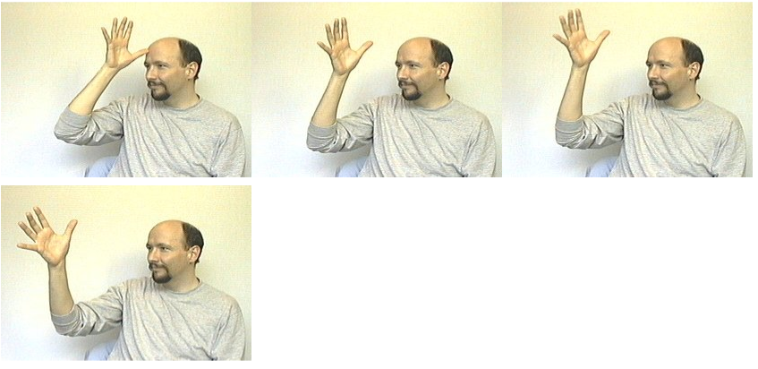
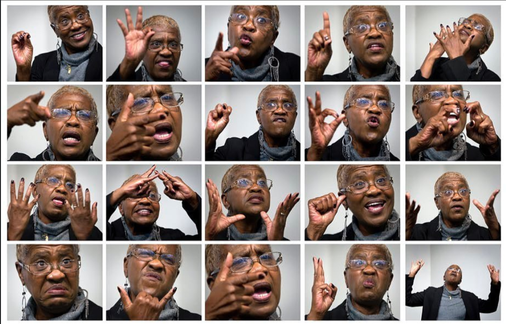
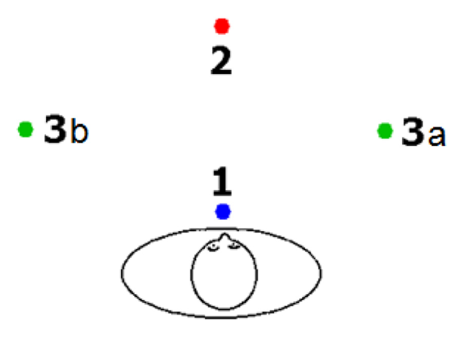
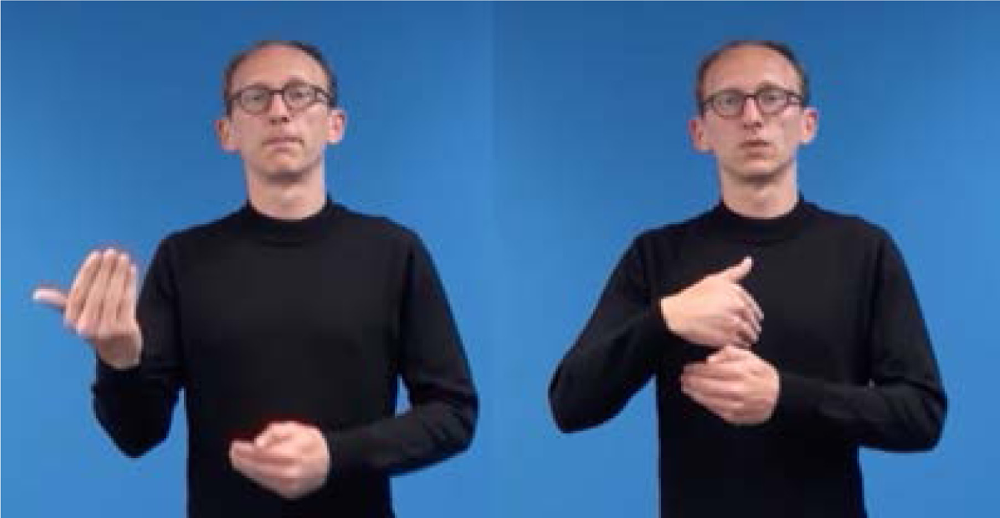
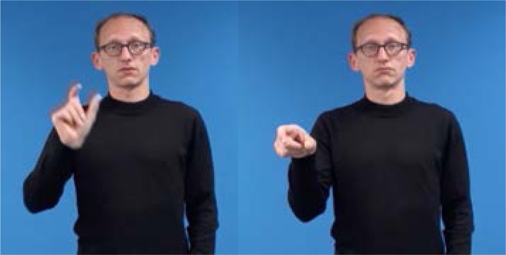

Project BiSign.
Foundation Digital Twins for Continuous Sign Language Kinematics
Closed-Loop Biomechanical Scaffolding, Cross-Modal LLMs & Participatory Co-Design
Over 70 million Deaf individuals globally communicate primarily through visual-gestural sign languages, yet spontaneous communication in critical environments (emergency triage, intensive care, legal courtrooms, higher education) remains severely restricted by an acute shortage of certified human interpreters. Natural sign languages possess no conventional written orthography and express grammar through simultaneous 4D spatio-temporal dynamics across physical space.
Current unconstrained generative AI architectures (black-box diffusion, video LLMs, Pose-VQVAE) suffer from severe topological hallucinations: digits stretch like rubber bands with unconstrained bone deformation, joints dislocate, and centimeter-scale phonological minimal pairs collapse into semantic gibberish.
Project BiSign will establish the first physically grounded foundation digital twin pipeline that guarantees 100% Euclidean bone-length invariance ($\Delta \equiv 0.000$) and sub-100 ms latency. We will unify an articulatory perception channel with $\mathcal{O}(1)$ Causal Spatial Memory ($M_t$) to solve spatial state collapse, cross-modal LLM reasoning via spatial-lexical vocabulary expansion ($V_{\text{extended}} = V_{\text{base}} \cup V_{\text{sign}}$) pre-trained on EuroHPC LUMI, and closed-form analytical circle swivel IK actuation. The system will be developed in participatory co-design with Kuurojen Liitto ry (The Finnish Association of the Deaf) under Finland's Viittomakielilaki 359/2015.
This interactive 3D digital twin is an embodied proof-of-concept demonstrating rigid Euclidean bone-length invariance ($\Delta \equiv 0.000$) and 3D contact kinematics across 30 articulated joints.
Click and drag anywhere on the canvas to rotate around the skeletal hand and arm. Scroll mouse wheel to zoom in on distal phalanges or zoom out for full open-space reach.
Click any sign button above (Hello, Mother, Father, Me, You). Signs articulate at deliberate 40% speed with smooth analytical circle swivel transitions.
Observe the colored spheres around the torso and head. These are the 24 calibrated body loci projected 5–10 cm outward, eliminating torso clipping and modeling authentic conversational volume.
Toggle the ⚡ Ablation Test button to disable analytical constraints. You will witness firsthand the severe bone stretching, joint dislocation, and spatial drift of unconstrained baselines.
Spatial Physics. Not Text Translation.
Why unconstrained text-to-video generators collapse, and how natural sign languages encode syntax across 4D physical space.
Over 70 Million Deaf People Worldwide.
Over 70 million Deaf and hard-of-hearing individuals communicate primarily through natural sign languages. Without professional human interpreters booked days in advance, spontaneous communication in mission-critical environments—such as acute emergency triage, intensive care units, legal courtrooms, or university STEM lectures—is virtually impossible.
Under the World Health Organization mandate (WHO World Report on Hearing), Finland's Sign Language Act (Viittomakielilaki 359/2015), and the European Accessibility Act (EU Directive 2019/882), equal access to public services and emergency healthcare is legally, socially, and constitutionally mandated.
“Sign languages cannot be modeled as simple text translations: they possess no conventional written orthography and communicate grammar through continuous spatio-temporal dynamics across 4D physical space.”
Spoken words are linearly sequenced acoustic vibrations. In stark contrast, sign languages utilize multi-channel parallel articulation: both hands articulate simultaneous paths, while facial action units modulate grammatical mood and ocular gaze locks onto invisible spatial coordinate anchors established in 3D air.
When classical NLP models treat signs as flat phonetic glosses, they trigger Spatial State Collapse: losing the continuous spatial referents that dictate pronouns, subject-object agreement, and discourse coherence.
Sub-Lexical Decomposition of the Signing Envelope
To formalize continuous sign synthesis without unconstrained black-box hallucinations, our parameter space will be mathematically calibrated against ASL-LEX 2.0 (Sehyr et al., 2021) encompassing 2,723 signs across 54 phonological dimensions. Every grammatical sign $S$ decomposes into an orthogonal 5-tuple:
20-DOF finger flexion and abduction configuration (Stokoe Designator). Fully constrained by natural inter-phalangeal bio-bounds.
Euclidean coordinates across 24 cranial, facial, torso, and neutral-space targets projected with 5–10 cm surface clearance.
Kinematic trajectories (Signation): taps, continuous arcs, outward ballistic bounces, and periodic circular oscillations.
Palm and wrist normal vectors in $\mathrm{SO}(3)$, driven by dual-bone radius revolving around stationary ulna.
$\langle b, m, g, h \rangle$: Eyebrow Action Units (AU1+2 vs AU4), mouth morphemes, 3D ocular gaze raycasting ($g_{\text{gaze}}$), and head tilt.
5 cm Spatial Drift Inverts Semantic Kinship
In sign language phonology, signs differing in exactly one physical parameter constitute minimal pairs. Unconstrained models lack spatial grounding and constantly fail:


3D Spatial Deixis & Directional Verb Trajectories
Signers construct continuous 3D grammatical coordinate anchors in the air around their body, termed Referential Loci ($R$-loci):

2: Addressee (You)
3a/3b: Referents

Traversing $3a \to 1$
“Mother visits me”

Marker (PAM)
Deictic Projector
How the Foundation Pipeline Works.
Think of Project BiSign as a living digital twin: an AI Brain that reasons directly in 3D motion, supported by unbreakable Physical Bone Guardrails and a 3D Spatial Memory Notebook that never loses track of the conversation.
BiSign-LLM: The Brain That "Thinks" & Moves in 3D Space
Standard AI only knows flat text: Tools like ChatGPT can read and type words, but sign language has no written alphabet. It is communicated through simultaneous hand shapes, body movements, and facial expressions in 3D air.
Thinking in 3D motion tokens: We teach a frontier language model (Llama/Mistral) a specialized vocabulary of 3D physical gestures ($V_{\text{sign}}$). When you speak to the system in English or Finnish, the AI doesn't reply with text—it plans the exact 3D movements for the avatar to sign back.
Instant calculation, zero lag: Instead of slowly rendering heavy video, the AI sends coordinates to our lightning-fast arm solver (Circle Swivel IK). It computes exact elbow and wrist angles in under a millisecond, giving the avatar human-like reflexes with zero awkward pauses.
Formal Vocabulary Expansion: We expand the LLM tokenizer via $V_{\text{extended}} = V_{\text{base}} \cup V_{\text{sign}}$, natively unifying discrete semantic tokens with continuous spatial anchors.
Closed-Form Circle Swivel Actuation: Output tokens compile into two-sphere circle intersections ($\|\mathbf{E}(\psi) - \mathbf{S}\| \equiv 16.5\,\text{cm}$), guaranteeing 100% Euclidean bone-length invariance ($\Delta \equiv 0.000$) and deterministic 60 FPS execution.
Manifold Kinematics: Stopping AI Hand Glitches & Broken Bones
Why regular AI video fails at hands: Generative video models (like Sora or Runway) guess raw pixels. They constantly create bizarre glitches—fingers melting together, extra knuckles appearing, or arms stretching like rubber bands. In sign language, a single deformed finger completely changes the word's meaning.
Strict anatomical guardrails: Instead of guessing pixels, this pillar acts as an unyielding physical skeleton. Every bone has a fixed millimeter length that can never stretch ($\Delta \equiv 0.000$), and every joint obeys natural human bending limits (e.g. fingers cannot bend backwards).
Operates residual diffusion directly on the Riemannian joint manifold $\mathcal{M}_{\text{kin}}$ rather than Euclidean image space.
Articulatory Tokenizer & Spatial Memory ($M_t$): Seeing & Remembering
The "Eyes" (Reading the Signer): When a Deaf person signs on webcam, this module breaks the video down into 5 clean physical building blocks at 60 FPS: Handshape, 3D Location, Movement, Palm Orientation, and Facial Expressions ($S = \langle H, L, M, O, \text{FNMS} \rangle$).
The "3D Memory Notebook": In sign language, people place invisible anchors in the air. For example, pointing to the left sets up "the doctor" and pointing to the right sets up "the patient." Normal AI forgets these anchors after a few sentences. Our 3D Spatial Memory ($M_t$) acts as a permanent notebook, remembering who is anchored where so the conversation never gets mixed up.
Solves Spatial State Collapse across multi-turn dialogue with continuous deictic parity inversion ($\mathbf{P}_{\text{deictic}}$).
The webcam detects the user's handshapes, facial markers, and 3D spatial anchors, storing who is who in the 3D memory bank.
The foundation model processes the message, recalls the 3D anchors, and generates the response directly in 3D motion tokens.
Physical bone constraints lock joint lengths, and the circle-swivel solver animates the 3D avatar at 60 FPS with zero lag.
Strategic Alignment with Aalto & Dr. Azade Farshad.
Why the Department of Computer Science at Aalto University, the ELLIS Institute Finland, and Dr. Farshad's generative geometric vision provide the exact scientific ecosystem for Project BiSign.
Scene-Graph Guidance, Topological Invariants & Hierarchical Diffusion
Dr. Azade Farshad's lab pioneered generative models with explicit semantic scene graphs, topological inductive biases, and hierarchical diffusion. Our framework directly extends her methodologies into visual-gestural communication:
- • Extending SceneGenie (ICCV 2023): Dr. Farshad pioneered training-free diffusion guidance using structured scene graphs $\mathcal{G} = (\mathcal{O}, \mathcal{E})$ and augmented bounding gradients ($\nabla \mathcal{L}_{\text{aug,boxg}}$). Sign discourse syntax operates precisely as a 3D scene graph where coordinate loci ($L_1, L_{3a}, L_{3b}$) are entity nodes and agreement verbs are directed edges. Her spatial bounding guidance directly steers hand effectors toward 3D anatomical contact loci without spatial drift.
- • Extending SCOPE (MICCAI 2023): Dr. Farshad demonstrated that biological structures require explicit graph-based topological continuity constraints (clDice, Betti numbers) to prevent disconnected vessels. High-DOF articulated hand skeletons exhibit identical topological vulnerabilities during neural diffusion, which her graph continuity regularizers ($\mathcal{L}_{\text{graph}}$) mathematically resolve to guarantee rigid bone-length invariance.
- • Extending HieraSurg (2025): Dr. Farshad formulated a two-stage hierarchical diffusion framework where high-level procedural states (phases/triplets) synthesize coarse structural maps that condition fine-grained continuous video synthesis. Our Dual-Rate Streaming Architecture translates this paradigm directly: discrete phonological macro-tokens generate coarse kinematic scaffolds that condition continuous 60 Hz motion diffusion.
Flagship Alignment with “AI for Health & Assistive Technologies”
ELLIS Institute Finland champions machine learning for healthcare, human well-being, and physiological digital twins. Project BiSign directly fulfills this mandate:
- • Assistive Communication Digital Twin: Under the WHO definition, chronic communication isolation represents a severe social determinant of health. BiSign provides the foundational digital twin infrastructure to eliminate communication barriers in emergency medicine, intensive care, and triage.
- • Candidate Competency Fit: The applicant brings proven research mentorship in continuous control RL, biomechanical forward kinematics, and client-side WebGL engine development—providing immediate execution velocity for the lab's grant deliverables.
Pre-Exascale LUMI-G Infrastructure in Kajaani, Finland
Web-scale video tokenization across millions of signing frames and distributed foundation model pre-training require sovereign European pre-exascale compute:
- • LUMI-G AMD MI250X Supercomputing: Hosted at CSC in Kajaani, Finland, LUMI provides the multi-node GPU clusters required for distributed continuous video feature extraction, vocabulary adaptation, and causal spatial attention training.
- • Direct Academic Access: As a doctoral researcher at Aalto CS, the project gains prioritized allocation channels through Finnish and European EuroHPC research allocations.
Participatory Co-Design under Viittomakielilaki 359/2015
Finland offers an unmatched societal foundation for sign language research, being among the few nations with constitutional protections for Deaf linguistic rights:
- • Human-in-the-Loop Co-Design: Partnership with Kuurojen Liitto ry (The Finnish Association of the Deaf in Helsinki) guarantees direct participatory evaluation with native Deaf signers, preventing paternalistic AI development.
- • Finnish Sign Language (SVK) Validation: Grounding the system in SVK under Finland's Viittomakielilaki 359/2015 ensures real-world societal impact, clinical trials, and regulatory compliance with the European Accessibility Act.
4-Year Doctoral Roadmap.
Structured under Aalto's 3-Paper Cumulative Strategy targeting top-tier peer-reviewed venues (ECCV → EMNLP → ICLR → D.Sc. Dissertation Defense).
Actuator & Perceptual Tokenizer
WP1 (M1–M16, Track A): Implement 30-joint Kinematic Synthesizer with Battison symmetry laws, closed-form 2-bone arm IK, and Manifold Residual Diffusion ($r_{\text{tol}} \le 5\text{ mm}$, $\mathcal{L}_{\text{graph}}$).
WP2 (M1–M16, Track B): Crawl open-domain signing videos; deploy HaMeR hand tracking, 50 FLAME blendshapes, and build $\mathcal{O}(1)$ Causal Spatial Memory Bank ($M_t$) with deictic rotation $\mathbf{R}_y(\pi)$.
Kinematic Diffusion & Dual-Rate Streaming
WP1/WP2 Finalization: Benchmark manifold-projected residual diffusion against baseline drift.
Paper 1 (M17, Target: ECCV 2028): Anatomically Constrained Residual Diffusion for Articulated Sign Kinematics.
WP3 Launch (M17–M26, Track B/C): Formulate dual-rate streaming (60 Hz kinematics + 1–2 Hz macro-tokens) and tokenizer vocabulary expansion ($\mathcal{V}_{\text{extended}} = \mathcal{V}_{\text{base}} \cup \mathcal{V}_{\text{sign}}$).
Foundation Adaptation & LUMI Pre-Training
WP3 (M17–M26): Dual-rate streaming and vocabulary expansion on open-weight Llama 3.1 8B / Mistral NeMo 12B.
WP4 (M24–M32, Track C): Continual pre-training on EuroHPC LUMI (AMD MI250X nodes, PyTorch FSDP + ROCm) across harvested sign tokens. Paper 2 (M33, Target: EMNLP 2029): BiSign-LLM: Adapting Open-Weight Foundation Models for Continuous Sign Language AI.
WP5 (M31–M36, Track C): Task-grounded downstream evaluation (Argument F1, Agreement-Gated BLEU). Paper 3 (M36, Target: ICLR 2030): Multimodal Spatial Foundation Modeling for Open-Domain Assistive Communication.
Pre-Examination, Community & Statutory Defense
WP6 (M37–M41, Oct 2029–Feb 2030): Pilot evaluation with certified Deaf consultants from Kuurojen Liitto ry and preparation of open-source foundation release.
Statutory Pre-Examination & Defense (M42–M48, Mar–Sept 2030): Cumulative dissertation compilation, formal pre-examination (esitarkastus) by external opponents, and public doctoral defense (väitöstilaisuus, Month 48) at Aalto University.
Prospective Extensions (Tiers 2–3): Zero-shot cross-lingual transfer to Finnish Sign Language (SVK) and community MOS user studies.
Doctoral Research Proposal
For references, literature review, and comprehensive technical derivations, please read the complete 14-page proposal directly below or open in fullscreen.
Universal Kinematic Synthesizer Workspace
Deterministic anatomical solver with 5 foundational parametric lexicons, universal sign composer covering all 2,723 ASL-LEX signs, and minimal finger collisions across all 26 alphabet letters.